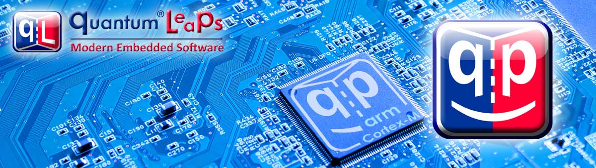

QP/C++
7.3.4
Real-Time Embedded Framework

QP/C++ Real-Time Embedded Framework (RTEF) is a lightweight implementation of the Active Object model of computation specifically tailored for real-time embedded (RTE) systems. QP is both a software infrastructure for building QP/C++ Applications consisting of Active Objects (Actors) and a runtime environment for executing the Active Objects in a deterministic fashion. Additionally, QP/C++ Framework supports Hierarchical State Machines with which to specify the behavior of Active Objects [ROOM:94], [UML 2.5],[Sutter:10]. The QP/C++ Framework can be viewed as a truly event-driven, "reactive" real-time operating system (RTOS).
The main objectives of the QP/C++ RTEF are:
The QP/C++ Real-Time Embedded Framework (RTEF) provides a modern, reusable architecture of embedded applications, which combines the model of concurrency, known as Active Objects (Actors) with Hierarchical State Machines. The QP/C++ RTEF also provides sufficiently high level of abstraction and the right abstractions to effectively apply modeling and code generation to deeply embedded systems.
The QP/C++ architecture is inherently safer and more real-time (more responsive) than "free threading" with a traditional Real-Time Operating System (RTOS).
QP/C++ is fundamentally an object-oriented framework, which means that the framework itself and your applications derived from the framework are fundamentally composed of classes and only classes can have state machines associated with them.
The behavior of active objects is specified in QP/C++ by means of hierarchical state machines (UML statecharts). The framework supports manual coding of UML state machines in C as well as fully automatic code generation by means of the free graphical QM™ model-based design (MBD) tool.
The QP/C++ framework can run on bare-metal single-chip microcontrollers, completely replacing a traditional RTOS. The framework contains a selection of built-in real-time kernels, such as the non-preemptive QV kernel, the preemptive non-blocking QK kernel, and the preemptive, dual-mode, blocking QXK kernel. The QXK kernel provides all the features you might expect from a traditional RTOS kernel and has been specifically designed for mixing event-driven active objects with traditional blocking code, such as commercial middleware (TCP/IP stacks, UDP stacks, embedded file systems, etc.) or legacy software. Native QP/C++ ports and ready-to-use examples are provided for major embedded CPU families, such as ARM Cortex-M, ARM Cortex-R, MSP430, and PIC32.
Even though QP/C++ offers much higher level of abstraction than a traditional RTOS, it typically outperforms equivalent traditional RTOS applications both in RAM/ROM footprint and in CPU efficiency. The specific measurements and results are reported in the following Application Note: "QP/C++ Performance Tests and Results":
QP/C++ can also work with many traditional Real-Time Operating Systems (RTOSes) and General-Purpose OSes (GPOSes) (such as Linux (POSIX) and Windows).
QP/C++ offers unprecedented, bidirectional traceability among all work artifacts, which gives teams full visibility from requirements through architecture, design, source code, tests, and back again.
With 20 years of continuous development, over 350 commercial licensees, and many times more open source users worldwide, the QP/C and QP/C++ frameworks are the most popular such offering on the market. They power countless electronic products across a wide variety of markets, such as medical, consumer, IoT, defense, robotics, industrial, communication, transportation, semiconductor IP, and many others.
The two editions of the book, Practical Statecharts in C/C++ provide a detailed design study of the QP/C and QP/C++ frameworks and explain the related concepts.
QP/C++ is licensed under the sustainable dual licensing model, in which both the open source software distribution mechanism and traditional closed source software distribution models are combined.
If you are developing and distributing open source applications under the GNU General Public License (GPL), as published by the Free Software Foundation, then you are free to use the Quantum Leaps software under the GPL version 3 of the License, or (at your option) any later version. Please note that GPL requires that all modifications to the original code as well as your application code (Derivative Works as defined in the Copyright Law) must also be released under the terms of the GPL open source license.
If you are developing and distributing traditional closed source applications, you can purchase one of Quantum Leaps commercial licenses, which are specifically designed for users interested in retaining the proprietary status of their code. All Quantum Leaps commercial licenses expressly supersede the GPL open source license. This means that when you license Quantum Leaps software under a commercial license, you specifically do not use the software under the open source license and therefore you are not subject to any of its terms.
Please post any technical questions to the Free Support Forum hosted on SourceForge.net. Posts to this forum benefit the whole community and are typically answered the same day.
Direct Commercial Support is available to the commercial licensees. Every commercial license includes one year of Technical Support for the licensed software. The support term can be extended annually.
Training and consulting services are also available from Quantum Leaps. Please refer to the Contact web-page for more information.